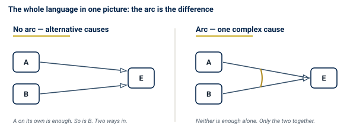
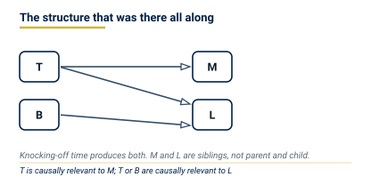
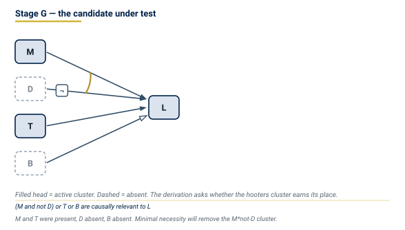
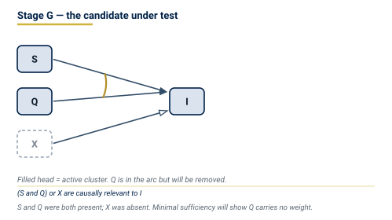
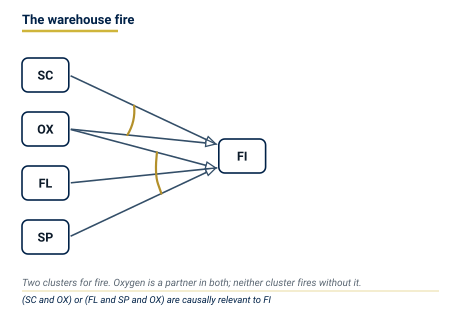

Causal Regularity Theory III: Casebook of Causal Regularities and Benchmarks
The Role of Intuition, Philosophical Sprachspiele, Qualitative and Experimental Cases, and Design Survey
![]()
A regularity theory of causation is tested by whether its definitions recover — and, where the intuition is confused by co-occurrence, correct — the pre-theoretic verdicts of a fixed case repertoire. This volume is that repertoire. It is organised so that each fully worked case exhibits which condition of the theory does the work: minimal sufficiency against idle conjuncts, minimal necessity against the Manchester hooters, bundle-level homogeneity against naive correlation, Gate B against a confounded risk difference. Twenty-four philosophical Sprachspiele, the qualitative coincidence analyses of Volume I, and the experimental inferences of Volume II are one casebook, not three. Stub summaries are refused: a case is either carried through the inference panel or recorded in the master table with its deciding rule.
causal casebook, causal intuitions, benchmark cases, minimal theories, Sprachspiele, coincidence analysis, experimental design survey, causal hypothesis inference, fire causation, statin trial, Simpson’s paradox, LK-99, OPERA
Causal Regularity Bundle — Volume III. Companion volumes: I (qualitative theory), II (experimental inference). Formal calculus: models.qmd. Visual language: causal-visuals.qmd. Terms are used in the senses of the LWgrammar register causal-regularity.
The role of intuition in causal theory
A theory of causation earns its keep by recovering the stable verdicts of a fixed case repertoire from its definitions, and by correcting the unstable ones. Intuition is the test, not the analysans.
Causal intuitions as Sprachspiele
Theories of causation are tested against short case descriptions. The method is uniform across the literature: a scenario is told in a few sentences; a verdict about the relevance of one factor to another is elicited; the theory under examination is required to replicate that verdict from its definitions alone.
The theory that meets this test speaks of a few things only, and a reader who has not come from Volume I needs them before the first definition:
The term is used here in Wittgenstein’s sense: “the meaning of a word is its use in the language” (PU §43), and grammar “tells what kind of object anything is” (PU §373). The casebook records use, not a hidden essence of cause.
This volume assembles the repertoire of the modern regularity-theoretic tradition: Graßhoff and May (2001), Baumgartner (2008, 2013), Baumgartner and Falk (2023), and Andreas and Günther (2019, 2024a, 2024b). Each fully worked case records three items:
- Situation — the description, quoted from the source where possible.
- Causal intuition — the pre-theoretic verdict, as reported in the source.
- Regularity judgement — the verdict the theory derives, with the condition that secures it — or an account of dissent.
A factor \(A\) is causally relevant to \(E\) if and only if \(A\) (or its negation) is a non-redundant conjunct of a cluster that is itself a non-redundant disjunct of a minimally necessary condition of \(E\) — a minimal theory of \(E\) (Graßhoff and May 2001) — and this membership is stable under suitable expansions of the factor set (Baumgartner 2013; Baumgartner and Falk 2023). The casebook shows, case by case, which of these conditions does the work.
Replication, correction, explication
Formal regularity theory stands to intuition in three relations, and only three:
- Replication. Where the intuition is stable, the theory must recover it from the coincidence table, without unobserved primitives.
- Correction. Where co-occurrence misleads (the hooters; Simpson’s reversal), the theory exposes the structural flaw — failure of minimal necessity (the hooters), or of homogeneity (Gate B, Simpson’s reversal).
- Explication. Pre-theoretic language conflates type-level with token-level causation, sufficiency with necessity, risk with protective polarity. The theory distinguishes them.
The inference panel
Every fully worked case in Parts 3 and 4 follows the six-step inference procedure of Volume II (causal hypothesis inference):
- state the causal hypothesis;
- secure Gate B;
- run Gate A;
- estimate the unique contribution of the treatment’s cluster;
- recover and score candidate clusters;
- state the licensed conclusion.
The panels set these steps out under the headings query, causal field and factor set, data setup, gates, recovered hypothesis with its scores, and what would change the verdict.
The philosophical cases (Section 2 to Section 6) use the staged panel of models.qmd: normalisation, coincidence table, derivation, verdict — and a CVL graph, the visual language specified in causal-visuals.qmd.
One convention carries every diagram in this volume, and a reader who has not come from Volume I needs only this much of it:

In the HTML edition the same graphs are interactive: clicking an arc reports the minimally sufficient condition it belongs to, and the derivation steps of a case can be played through as deletions.
The paradigm: Manchester Factory Hooters
Situation
The case owes its canonical role to Mackie (1974, 81–84); Andreas and Günther (2026, sec. 1.3) describe it as adapted from Russell (1921). Every workday at five o’clock the hooters of a Manchester factory sound; a moment later, workers in London stop work and go home. The regular succession is not accidental: knocking-off time at five o’clock sounds the hooters in Manchester and, through the automatic devices that set off the London hooters at five o’clock, sends the Londoners home.
Mackie himself points out that his INUS analysis counts the sounding of the Manchester hooters as a cause of the Londoners’ going home (Mackie 1974, 84; Andreas and Günther 2026, sec. 1.3); Graßhoff and May call the case “a counter example formulated by Mackie himself” (2001, 85). It shows that the INUS analysis certifies as a cause what is not one.
Causal intuition
The sounding of the Manchester hooters is not causally relevant to the London workers’ going home. The two events are parallel effects of a common cause. Mackie’s own diagnosis appeals to causal priority: preventing the Manchester hooters from sounding does not prevent the Londoners from going home, whereas preventing the London hooters does (Mackie 1974, 85–86; Andreas and Günther 2026, sec. 1.3). The regularity theory does not use this prevention test. In the reconstruction below the London hooters belong to the causal field, not to the factor set, and the verdict is earned by minimal necessity alone.
Mackie’s problem: the INUS analysis certifies the hooters
The INUS idea is that a cause is an insufficient but non-redundant part of an unnecessary but sufficient condition (INUS) (Mackie 1965). Consider the conjunction of three conditions: (i) the Manchester hooters sound; (ii) nothing made them sound off-schedule; (iii) the London-side standing conditions, including the devices that set off the London hooters at five o’clock, are in place. This conjunction is sufficient for the Londoners’ going home, and no part of it can be dropped without losing sufficiency: it is a cluster, and each of its parts is non-redundant. Thus the sounding of the Manchester hooters passes Mackie’s test for being a cause of the Londoners’ going home (Mackie 1974, 84).
Andreas and Günther (2026, sec. 1.3) state the structure as two regularities. Written with the letters of the key — their \(E_1\), \(E_2\), \(C_1\) are \(M\), \(L\), \(T\), and their auxiliary conditions \(C_2\) (Manchester side) and \(C_3\) (London side) are held fixed in the causal field — they read
\[T + D \leftrightarrow M, \qquad T + B \leftrightarrow L.\]
Reading. The Manchester hooters sound exactly when it is knocking-off time or they are sounded off-schedule; the Londoners go home exactly when it is knocking-off time or the foreman dismisses them early (diagram: Figure 3).
Then the cluster \(M * \neg D\) is minimally sufficient for \(L\): whenever the hooters sound and were not sounded off-schedule, it is five o’clock, and the Londoners go home; neither conjunct suffices alone. Each conjunct — including \(M\) — is an INUS condition of \(L\). Mackie concluded that a pure regularity theory cannot be the whole story about causation and supplemented it by a notion of causal priority (Mackie 1974, 85–86; Graßhoff and May 2001, 102–3); Baumgartner describes this as abandoning the attempt at a genuine regularity-theoretic analysis of causation (Baumgartner 2008, sec. 7).
The Graßhoff–May solution: minimal necessity
The solution within the regularity framework is due to Graßhoff and May (2001, 101–4) and May (1999): both call for the minimisation of necessary conditions (Baumgartner 2008, sec. 7). Baumgartner and Graßhoff (2004, 99–103) discuss the case in full (Baumgartner 2008, n. 21).
Mackie minimised only half of his analysis. His test removes idle conjuncts from sufficient conditions, but imposes no test on the disjunction of sufficient conditions (the list of alternative causes). The repair is the missing half: a necessary condition must be minimally necessary — no disjunct may be deletable without loss of necessity.
Applied to the hooters: the list of putative alternative causes reads
\[(M * \neg D) + T + B \leftrightarrow L.\]
Reading. The Londoners go home exactly when (the hooters sound and were not sounded off-schedule) or it is knocking-off time or the foreman dismisses them early.
Delete the hooters cluster and test what remains: \(T + B\) is still necessary for \(L\). Whenever the hooters cluster \(M * \neg D\) is instantiated, the common cause \(T\) is instantiated along with it. The hooters cluster is a free rider, and minimal necessity removes it. Since \(M\) appears nowhere in the minimal theory of \(L\), the Manchester hooters are not causally relevant to the Londoners’ going home.
What the elimination leaves behind is the structure the intuition had all along:

The general lesson is worth stating separately, because the pattern recurs throughout the casebook. Wherever two factors correlate perfectly and one is tempted to call the earlier a cause of the later, minimal necessity asks whether the cluster through the earlier one is needed once the common cause is in the theory. If it is not, it goes — and the correlation is explained without a causal link between the correlates.
Causal analysis: canonical derivation
I Normalisation. Causal field: working days on which the hooter mechanisms function and the London-side standing conditions (Mackie’s \(C_2\), \(C_3\), including the devices that set off the London hooters at five o’clock) are in place. \(\mathcal{F} = \{T, D, B, M, L\}\).
| Symbol | Factor (type) | Token |
|---|---|---|
| \(T\) | five o’clock (knocking-off time) | present |
| \(D\) | Manchester hooters sounded off-schedule (drill or fault) | absent |
| \(B\) | alternative cause of the Londoners’ going home (foreman’s early dismissal) | absent |
| \(M\) | Manchester factory hooters sound | present |
| \(L\) | London workers go home | present |
G Causal graph.

II Coincidence table.
| row | \(T\) | \(D\) | \(B\) | \(M\) | \(L\) | |
|---|---|---|---|---|---|---|
| 1 | 0 | 0 | 0 | 0 | 0 | |
| 2 | 0 | 0 | 1 | 0 | 1 | |
| 3 | 0 | 1 | 0 | 1 | 0 | |
| 4 | 0 | 1 | 1 | 1 | 1 | |
| 5 | 1 | 0 | 0 | 1 | 1 | \(\blacktriangleleft\) |
| 6 | 1 | 0 | 1 | 1 | 1 | |
| 7 | 1 | 1 | 0 | 1 | 1 | |
| 8 | 1 | 1 | 1 | 1 | 1 |
III–IV Model and derivation. MT — Outcome: \(L\).
| # | Claim | Licence | In words |
|---|---|---|---|
| 1 | \(T \rightarrow L\); \(B \rightarrow L\); \(M * \neg D \rightarrow L\) | (SUF): rows 5–8; rows 2, 4, 6, 8; rows 5, 6 | Three conditions are sufficient |
| 2 | \(T\), \(B\), \(M * \neg D\) are minimally sufficient | (MS): row 3 refutes \(M\) alone; row 1 refutes \(\neg D\) alone | No conjunct is idle |
| 3 | \(T + B + M * \neg D \leftrightarrow L\) | (NEC): each \(L\)-row (2, 4–8) satisfies a disjunct; the rows without \(L\) (1, 3) satisfy none | Necessary condition |
| 4 | INUS verdict: \(M\) is an INUS condition of \(L\) | INUS stops at line 3 | INUS overgenerates |
| 5 | \(T + B\) is necessary for \(L\) | (NEC): each \(L\)-row (2, 4–8) contains \(T\) or \(B\) | \(T\) or \(B\) is present whenever \(L\) is |
| 6 | Eliminate \(M * \neg D\): \(T + B\) is a necessary proper part of line 3, so line 3 is not minimally necessary | (MN), from lines 3 and 5 | Graßhoff–May step |
| 7 | Neither \(T\) nor \(B\) can be eliminated: row 2 has \(L\) without \(T\), row 5 has \(L\) without \(B\); two clusters remain | (MN); (CPLX)(a) | Direction is structurally oriented |
| 8 | Minimal theory: \(T + B \Rightarrow L\) | lines 2, 6, 7: (MS), (MN), (CPLX) | \(T\) or \(B\) are causally relevant to \(L\) |
V Verdict. \(M\) is not causally relevant to \(L\): knocking-off time or the foreman’s early dismissal are causally relevant to the Londoners’ going home, and the Manchester hooters occur in no cluster of that minimal theory (Figure 2). The verdict replicates the intuition, and every step is read off the eight rows.
Type-Level Benchmark Sprachspiele
Case 1: Struck match and sung song (Monotony & Minimal Sufficiency)
Situation. A match is struck against a box (\(S\)), the head is dry, and oxygen is present. The striker also sings a song (\(Q\)). The match ignites (\(I\)) (Baumgartner 2008, secs. 3–4).
Intuition. \(S\) is causally relevant to \(I\); \(Q\) is not.
Regularity judgement. Minimal sufficiency (MS) prunes \(Q\): \(S\) is a conjunct of an MSC for \(I\), whereas \(Q\) is idle.
I Normalisation. Causal field: dry match heads, enough oxygen. \(\mathcal{F} = \{S, Q, X, I\}\) (\(X\): open flame).
| Symbol | Factor (type) | Token |
|---|---|---|
| \(S\) | match is struck | present |
| \(Q\) | striker sings a song | present |
| \(X\) | match exposed to open flame | absent |
| \(I\) | match ignites | present |
G Causal graph.

II Coincidence table.
| row | \(S\) | \(Q\) | \(X\) | \(I\) | |
|---|---|---|---|---|---|
| 1 | 0 | 0 | 0 | 0 | |
| 2 | 0 | 1 | 0 | 0 | |
| 3 | 0 | 0 | 1 | 1 | |
| 4 | 0 | 1 | 1 | 1 | |
| 5 | 1 | 0 | 0 | 1 | |
| 6 | 1 | 1 | 0 | 1 | \(\blacktriangleleft\) |
III–IV Derivation. MT — Outcome: \(I\).
| # | Claim | Licence |
|---|---|---|
| 1 | \(S * Q \rightarrow I\); \(S \rightarrow I\); \(X \rightarrow I\) | (SUF): row 6; rows 5, 6; rows 3, 4 |
| 2 | \(Q\) is idle in \(S * Q\); \(Q\) alone is not sufficient | (MS): rows 5, 6 (\(S\) alone suffices); row 2 refutes \(Q\) |
| 3 | \(S + X\) is necessary for \(I\), and neither disjunct alone is | (NEC), (MN): every \(I\)-row (3–6) has \(S\) or \(X\); row 3 lacks \(S\), row 5 lacks \(X\) |
| 4 | Minimal theory: \(S + X \Rightarrow I\) | lines 2, 3; (CPLX)(a), two clusters |
Reading. Striking or exposure to an open flame are causally relevant to the match’s igniting.
V Verdict. \(S\) is causally relevant to \(I\); \(Q\) is not.
The remaining type-level cases (rows 2–6 of Table 1) vary this pattern. Each tests one condition: equifinality (short circuit and arson), conjunctivity (match and oxygen), chains (switch and lamp), common cause (barometer), orientation (asymmetric structure). They are recorded in the master table with their deciding rule, not restated as empty sections.
Token-level actual causation
Type-level membership does not settle which cluster fired in a particular situation. Actual causation asks which instantiated cluster brought about this outcome.
Case 7: Two fires (symmetric overdetermination)
Situation. Two fires, ignited independently by short circuit (\(A\)) and lightning (\(B\)), reach a building at the same moment and burn it down (\(E\)). The structure is Baumgartner’s symmetric overdetermination, where two neurons “trigger E simultaneously, such that each stimulus would have itself been sufficient for E to fire” (Baumgartner 2013, fig. 4c); the fire story is an illustration of it.
Intuition. Both \(a\) and \(b\) — the particular short circuit and the particular lightning strike — are actual causes of \(e\), the burning of this building.
Regularity judgement. Both clusters fire in this case. Actual causation certifies both clusters as active. The case shows that minimality at type level does not force uniqueness at token level: overdetermination is membership of two instantiated clusters, not a defect of the theory.
Case 8: Suzie and Billy (late preemption)
Situation. Suzie (\(A\)) and Billy (\(B\)) both throw rocks at a bottle; the bottle shatters (\(E\)). Suzie’s rock arrives first and shatters it; Billy’s rock passes through empty air. Billy’s process is cut off by the effect itself — the pattern Baumgartner analyses as late preemption (Baumgartner 2013, fig. 4b); the rock story is an illustration of it.
Intuition. Suzie’s throw caused the shattering; Billy’s did not.
Regularity judgement. Suzie’s throw belongs to the active cluster. Billy’s cluster is preempted: it is not completely instantiated, because his rock never meets an intact bottle. Actual causation tracks the instantiated cluster, not the counterfactual “had Suzie not thrown, Billy would have.”
The remaining token-level cases (rows 9–16 of Table 1) vary preemption, switching, prevention, and omission. Each is decided by the rule named in the table.
Explanatory ‘because’
Andreas and Günther (2019, 2024a, 2024b) extend regularity theory to explanatory ‘because’ claims. The load-bearing contrast is the tower and its shadow: the tower explains the shadow, the shadow does not explain the tower. The remaining explanatory cases (rows 17–24 of Table 1) — among them the subcause, extended double prevention and the assassin’s mentor — are recorded there with their deciding rules. The Munich–Lund example, with which Andreas and Günther show that the unstrengthened Ramsey test makes ‘because’ trivial (2019, secs. 1, 3.3), is not a row of the table.
Master Benchmark Comparison Table & Synthesis
| # | Case Name | Source | Key Concept | Intuition | Regularity Verdict | Deciding Rule |
|---|---|---|---|---|---|---|
| 1 | Struck match | Baumgartner (2008) | Monotony / Idle conjunct | Cause | Replicated | (MS) |
| 2 | Short circuit & arson | Constructed (equifinality) | Equifinality | Cause | Replicated | (MN), (CPLX) |
| 3 | Match & oxygen | Baumgartner (2008) | Conjunction / Co-factors | Cause | Replicated | (MS), (SUF) |
| 4 | Switch & lamp | Constructed (chain) | Causal chain | Cause | Replicated | (CHAIN) |
| 5 | Barometer | Graßhoff & May (2001) | Common cause | No cause | Replicated | (PERM), (MN) |
| 6 | Asymmetric structure | Baumgartner (2008) | Orientation | Cause | Replicated | (CPLX) |
| 7 | Two fires | Baumgartner (2013) | Overdetermination | Cause | Replicated | (AR) |
| 8 | Suzie & Billy | Baumgartner (2013) | Late preemption | Suzie cause | Replicated | (AR), (MARK) |
| 9 | Major & Sergeant | Baumgartner (2013) | Late preemption | Major cause | Replicated | (AR), (MARK) |
| 10 | Merlin & Morgana | Baumgartner & Falk (2023) | Trumping | Merlin cause | Replicated | (CMT) |
| 11 | Train switch | Baumgartner (2013) | Switching | No cause | Replicated | (MS) |
| 12 | Short circuit & sprinkler | Baumgartner (2013) | Short circuit | No cause | Replicated | (MS) |
| 13 | Poison & antidote | Baumgartner (2013) | Prevention | Antidote cause | Replicated | (NEG-LIT) |
| 14 | Guard asleep | Baumgartner (2013) | Omission | Guard cause | Replicated | (NEG-LIT) |
| 15 | Double prevention | Baumgartner (2013) | Double prevention | Cause | Replicated | (DBL-PREV) |
| 16 | Preemption by prevention | Baumgartner (2013) | Path preemption | Cause | Replicated | (PATH-PREV) |
| 17 | Re-ignition | Andreas & Günther (2019) | Explanatory ‘because’ | Because | Replicated | (RT-B) |
| 18 | Secondary cause | Andreas & Günther (2019) | Background context | Because | Replicated | (RT-B) |
| 19 | Negative cause | Andreas & Günther (2019) | Negative explanation | Because | Replicated | (RT-B) |
| 20 | Counterfactual because | Andreas & Günther (2019) | Counterfactual match | Because | Replicated | (RT-B) |
| 21 | Subcause | Andreas & Günther (2024b) | Entangled causes | Cause | Replicated | (LREL) |
| 22 | Extended double prev. | Andreas & Günther (2024b) | Short circuit in DP | \(c\) cause, \(f\) not | Replicated | (PATH), (MAX) |
| 23 | Assassin’s mentor | Andreas & Günther (2024a) | Bogus prevention | Antidote not cause | Replicated | (DEV\('\)) |
| 24 | Tower & shadow | Andreas & Günther (2019) | Explanatory asymmetry | Tower causes | Replicated | (RT-B) |
Part 3: Qualitative Cases (Volume I Tests)
The following panels apply the definitions of Volume I to coincidence tables. Each is carried through the six-step protocol.
Case A-01: Warehouse Fire — Is the Short Circuit a Cause?

Case A-11: Ice Cream and Drowning — Correlation or Causation?
Case A-FH: Manchester Factory Hooters (Qualitative Panel)
Engine-Query Crosswalk: Cases 01–20
The full engine-query casebook addresses twenty canonical question-types that arise when reading experimental science.
| Case | Type | Key concept | INF | FALL |
|---|---|---|---|---|
| 01 | Qualitative relevance | MSC membership | INF-01–02 | — |
| 02 | Token attribution | Active MSC | INF-06 | — |
| 03 | Equifinality | Alternatives | INF-05 | — |
| 04 | Conjunctivity | Partners | INF-04 | — |
| 05 | Causal chain | Paths via endogenous | INF-07 (declined) | — |
| 06 | Common cause | Joint effects | INF-08 | — |
| 07 | Direction ambiguity | Asymmetry, csf | INF-03 | — |
| 08 | Graded evidence | FitVector, robustness | INF-09 | — |
| 09 | Noisy data | Ambiguity set | — | — |
| 10 | Cross-study pooling | E-process | — | — |
| 11 | Correlation vs. causation | Naive correlation | INF-11 | FALL-02 |
| 12 | Sample size | Power | — | — |
| 13 | Next configuration | EIG | — | — |
| 14 | Sequential monitoring | E-process | — | — |
| 15 | Post hoc fallacy | No negatives | — | FALL-01 |
| 16 | Simpson’s paradox | Confounder in MSC | INF-03 | FALL-04 |
| 17 | Subgroup effects | HARKing/conjunctivity | INF-04 | FALL-09 |
| 18 | Underpowered study | Absence claim | — | FALL-07 |
| 19 | Mediation | csf chain | INF-07 (declined) | — |
| 20 | Full paper audit | All | All | All |
Part 4: Quantitative & Experimental Cases (Volume II Tests)
The following panels apply causal hypothesis inference (Volume II) to replicated or published experimental data.
Case B-ST: Statin Trial — Does STATIN Reduce Cardiovascular Events?
Case B-16: Simpson’s Paradox — Kidney Stone Treatments
Case B-18: Underpowered Study — Non-Significance vs. Absence
Case B-20: Full Paper Audit — CONSORT-Compliant RCT
Case B-LK: LK-99 Ambient Superconductivity Audit
Case B-OP: OPERA Faster-Than-Light Neutrino Audit
Part 5: Survey of Experimental Designs and ROADMAP
Theoretical Survey of Standard Experimental Designs
Every standard experimental design is an instance of the firing-rate identity under a specific Gate-B assignment and sampling mechanism. A randomised controlled trial (RCT) assigns \(T\) independently of the latents; a cohort stratifies; a case-control samples on the outcome. The table states what each design identifies and which fallacy it typically risks, with the registry inhibitor where the registry has one.
| Design Type | Table Structure | Gate B Mechanism | Identifiable Causal Object | Primary risk (registry inhibitor) |
|---|---|---|---|---|
| RCT | Replicated \(2\times 2\) or \(2\times k\) table | Random assignment of \(T\) | MSC-membership of \(T\); risk difference \(\Delta\) | HARKing, subgroup claims (FALL-09) |
| Factorial | \(2^k\) cross-tabulation | Joint random assignment | Interaction sign \(I\): conjunctive vs. disjunctive | Ignoring the interaction sign (no registry inhibitor) |
| Cohort | Prospective follow-up table | Stratification & Cornfield bound | Conditional MSC-membership | Unmeasured confounder (FALL-03); Simpson’s reversal (FALL-04) |
| Case-Control | Retrospective outcome-sampled table | Rare-disease assumption | Risk difference sign (polarity) via OR | Claiming a magnitude from the odds ratio (no registry inhibitor) |
| Sequential | Longitudinal stream of \(n\) trials | Supermartingale e-process | Anytime-valid evidence that a cluster’s success rate exceeds the base rate | Optional stopping (no registry inhibitor) |
| Meta-Analysis | Multi-study pooled table | Random-effects \(\tau^2\) | Heterogeneous MSC-partners across fields | Pooling inhomogeneous fields (no registry inhibitor) |
The ROADMAP Survey Across Domains
Tranche A: Physics & Materials Discovery
| ID | Domain / Case | Factor Set \(\mathcal{F}\) | Method / Design | Status | Verdict |
|---|---|---|---|---|---|
| A-01 | Warehouse Fire | SC, OX, FL, SP | Qualitative Coincidence | Complete | SC relevant; \(\text{SC}*\text{OX} + \text{FL}*\text{SP}*\text{OX} \Rightarrow \text{FI}\) |
| B-LK | LK-99 Superconductivity | LK99, CU_SUB, CU2S, ZERO_R, DROP | Physical Replication Audit | Complete | Falsified (\(\mathrm{Cu}_2\mathrm{S}\) artefact) |
| B-OP | OPERA Neutrino Speed | NEUTRINO, FIBER_LOOSE, CLOCK_CAL, SUPERLUMINAL | Systematic Error Audit | Complete | Falsified (timing-chain artefact) |
| A-02 | Room-Temp Hydride | PRESS, TEMP, STRUCT, SC | High-Pressure Diamond Anvil | Ingest Pending | Target: \(H_3S\) / \(LaH_{10}\) phase boundary |
| A-03 | Metallic Hydrogen | PRESS, SPECT, TRANS, MH | Optical Absorption | Ingest Pending | Target: Phase transition boundary |
Tranche B: Clinical Trials & Epidemiological Cohorts
| ID | Domain / Case | Factor Set \(\mathcal{F}\) | Method / Design | Status | Verdict |
|---|---|---|---|---|---|
| B-ST | Statin Trial | STATIN, HBP, CVE | Randomised Trial (RCT) | Complete | Protective: \(\text{STATIN}*\text{HBP} \Rightarrow \neg\text{CVE}\) |
| B-16 | Simpson’s Paradox | T, SEV, E | Stratified Cohort | Complete | Suspended (compositional confounding) |
| B-18 | Underpowered Study | T, E | Low-power RCT | Complete | Inconclusive (FALL-07) |
| B-20 | CONSORT Paper Audit | TRT, AGE, SEV, OUT | Full Paperflow Audit | Complete | Automated 6-stage report |
| B-01 | SGLT2 Inhibitor Trial | SGLT2, CKD, T2D, RENAL | Multicentre RCT | Ingest Pending | Renal protection MSC |
| B-02 | mRNA Vaccine Efficacy | VAC, AGE, VAR, INF | Phase III RCT + Cohort | Ingest Pending | Waning & variant interaction |